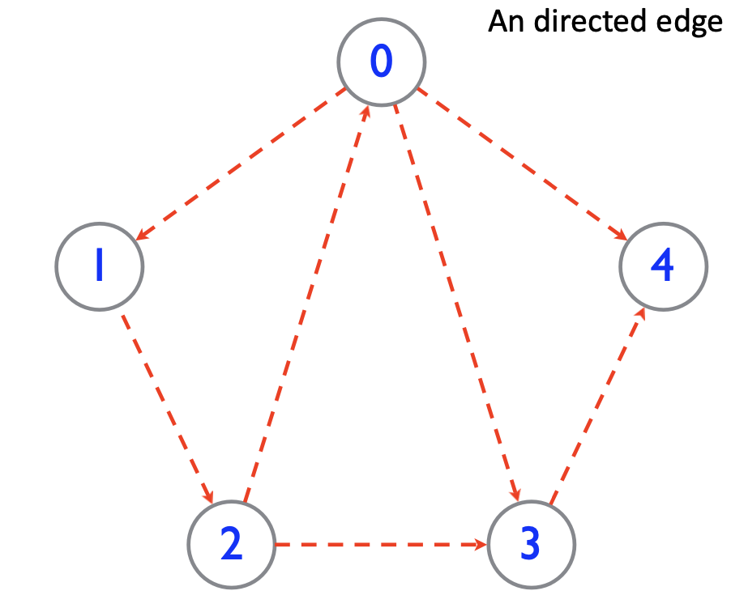

6 Graph Basics
Introduction to Graphs
- Motivation: DAG are effective abstraction of many real-world problems (Köningberg Bridge Problem)
- Advantage 1: Removing irrelevant information for easier analysis.
- Advantage 2: Getting general rules across any applications.
- Some applications of graph (graphs are ubiquitous):
- Molecular structure
- Protein
- Brain network
- Social network
- Road network
- Integrated circuit
Definition 1 DAG is a pair of sets \((V, E)\), where \(V\) is a set of vertices and \(E\) is a set of edges, each edge is a pair of vertices.
- Undirected graph: An edge is a set of two vertices.
- An edge between two vertices is denoted as
(“an endpoint”, “the other endpoint”) - An edge between Vertices 0 and 1 is denoted as:
(0,1)
- An edge between two vertices is denoted as
- Directed graph: An edge is an ordered pair of vertices. 
- An directed edge from an origin vertex to a destination vertex is denoted as:
(origin, destination). - An edge from Vertex 0 to Vertex 1 is denoted as:
(0,1) - An edge from Vertices 2 to 0 is denoted as:
(2,0)
- An directed edge from an origin vertex to a destination vertex is denoted as:
- Weighted graph: Each edge has a weight.
- An edge with weight from Vertex 0 to Vertex 1 is denoted as:
(0,1,3) - A weighted edge between Vertices 2 and 0 is denoted as:
(2,0,4)
- An edge with weight from Vertex 0 to Vertex 1 is denoted as:
- Representing an undirected graph with a directed graph:
Definition 2 A circle is a path that starts and ends at the same vertex. If there is no circle in a graph, it is called an acyclic graph.
- Real world example of acyclic graph: CS 253 knowledge dependency graph
Definition 3 An undirected graph is connected if, for any two vertices, there is a path between them.
- A tree is a connected acyclic graph.
- A forest is a collection of trees.
Definition 4 A graph \(G'=(V',E')\) whose vertices and edges are subsets of the vertices and edges of \(G=(V,E)\), such that \(V' \subseteq V\) and \(E' \subseteq E\), is called a subgraph of \(G\).
Note that a graph itself is a subgraph of itself.
- A spanning subgraph of a graph \(G\) is a subgraph that contains all the vertices of \(G\).
- Suppose \(G'=(V',E')\) is a spanning subgraph of \(G=(V,E)\), then it must be that \(V'=V\) and \(E' \subseteq E\).
- A tree \(T=(V',E')\) whose vertices are all the vertices of \(G\) and edges are a subset of the edges of \(G\) is called a spanning tree of \(G\).
- Suppose \(T=(V',E')\) is a spanning tree of \(G=(V,E)\), then it must be that \(V'=V\) and \(E' \subseteq E\).
- Moreover, \(T\) must be a tree.
Definition 5
- In an undirected graph The degree of a vertex is the number of edges incident to it. We denote the degree of a vertex \(v\) as \(d(v)\).
- In a directed graph, the in-degree of a vertex is the number of edges that point to it, and the out-degree of a vertex is the number of edges that point from it.
- Java implementatin of a graph:
DAG Traversal
Definition 6 A path is a sequence of distinct edges which joins a sequence of distinct vertices. A closed path is called a cycle.
- In directed graph, the edge in a path follows the same direction.
Definition 7 We say that \(u\) reaches \(v\) (aka. \(v\) is reachable from \(u\)) if there is a path from \(u\) to \(v\).
Definition 8
- An undirected graph is connected if, for any two vertices, there is a path between them.
- A directed graph is strongly connected if, for any two vertices \(u\) and \(v\), \(u\) reaches \(v\) and \(v\) reaches \(u\).
- A directed graph is weakly connected if replacing all of its directed edges with undirected edges produces a connected (undirected) graph.
- Relation between vertex degree and number of edges.
- Let \(m\) be the number of edges and \(n\) be the number of vertices.
- In undirected graph, sum of degrees of all vertices is \(2m\).
- \(0\leq m\leq\dfrac{n(n-1)}{2}=\mathcal{O}(n^2)\)
- In directed graph, sum of out-degree of all vertices = sum of in-degree of all vertices = \(m\).
- \(0\leq m\leq n(n-1)=\mathcal{O}(n^2)\)
Definition 9 DAG traversal is A systematic procedure for exploring a graph by examining all of its vertices and edges.
- We will discuss two graph traversal algorithms:
- Breadth-first search (BFS): explore all the neighbors of a vertex before moving on to the next level of neighbors. We visit vertices level by level.
- Depth-first search (DFS): Explore the graph by going as deep as possible along each branch before backtracking.
- DFS:
- Algorithm Overview
Algorithm DFS(u): for each u's outgoing edges e=(u,v), do { if v is not visited, then { record vertex v and its discovery edge e. Recursively call DFS(v). } } - BFS:
- Algorithm Overview
Algorithm BFS(u) initialize a recorder of visited vertices for each level of vertices as long as nonempty { for each vertex in the current level { for each unvisited neighbor of current vertex { add into recorder add all its neighbors into next level } } }